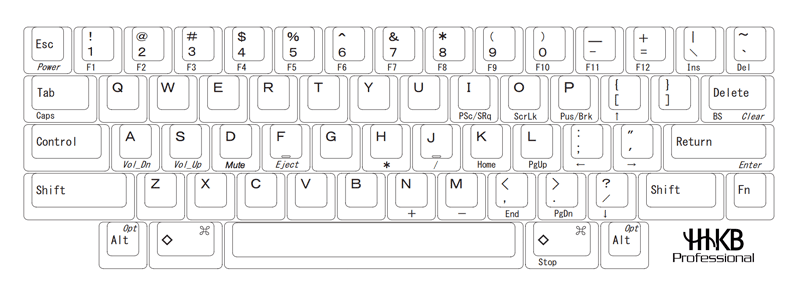

  
    
  


  


  


  

<!DOCTYPE html>
<html lang="zh-cn">
  <head>
    
    <script type="text/javascript"
        async
        src="https://cdn.bootcss.com/mathjax/2.7.3/MathJax.js?config=TeX-AMS-MML_HTMLorMML">
MathJax.Hub.Config({
  tex2jax: {
    inlineMath: [['$','$']],
    displayMath: [['$$','$$']],
    processEscapes: true,
    processEnvironments: true,
    skipTags: ['script', 'noscript', 'style', 'textarea', 'pre'],
    TeX: { equationNumbers: { autoNumber: "AMS" },
         extensions: ["AMSmath.js", "AMSsymbols.js"] }
  }
});

MathJax.Hub.Queue(function() {
    
    
    
    var all = MathJax.Hub.getAllJax(), i;
    for(i = 0; i < all.length; i += 1) {
        all[i].SourceElement().parentNode.className += ' has-jax';
    }
});
</script>

<style>
code.has-jax {
    font: inherit;
    font-size: 100%;
    background: inherit;
    border: inherit;
    color: #515151;
}
</style>
    <meta charset="UTF-8">
    <meta name="viewport" content="width=device-width, initial-scale=1">
    <meta name="generator" content="Hugo 0.55.6 with theme Tranquilpeak 0.4.1-BETA">
    <title>Hhkb使用心得</title>
    <meta name="author" content="Mijian Xu">
    <meta name="keywords" content="">

    <link rel="icon" href="../../../favicon.png">
    

    
    <meta name="description" content="
图片来自HHKB官网">
    <meta property="og:description" content="
图片来自HHKB官网">
    <meta property="og:type" content="blog">
    <meta property="og:title" content="Hhkb使用心得">
    <meta property="og:url" content="/2019/02/hhkb%E4%BD%BF%E7%94%A8%E5%BF%83%E5%BE%97/">
    <meta property="og:site_name" content="Note to Tech">
    <meta name="twitter:card" content="summary">
    <meta name="twitter:title" content="Note to Tech">
    <meta name="twitter:description" content="
图片来自HHKB官网">
    
    

    
    

    
      <meta property="og:image" content="//www.gravatar.com/avatar/3c21a901526ad8ccb4e92dd5c571b204?s=640">
    

    
    
    

    

    
    <link rel="stylesheet" href="https://cdnjs.cloudflare.com/ajax/libs/font-awesome/4.7.0/css/font-awesome.min.css" integrity="sha256-eZrrJcwDc/3uDhsdt61sL2oOBY362qM3lon1gyExkL0=" crossorigin="anonymous" />
    <link rel="stylesheet" href="https://cdnjs.cloudflare.com/ajax/libs/fancybox/2.1.4/jquery.fancybox.min.css" integrity="sha256-vuXZ9LGmmwtjqFX1F+EKin1ThZMub58gKULUyf0qECk=" crossorigin="anonymous" />
    <link rel="stylesheet" href="https://cdnjs.cloudflare.com/ajax/libs/fancybox/2.1.4/helpers/jquery.fancybox-thumbs.min.css" integrity="sha256-SEa4XYAHihTcEP1f5gARTB2K26Uk8PsndQYHQC1f4jU=" crossorigin="anonymous" />
    
    
    <link rel="stylesheet" href="../../../css/style-fpbzgxsy0kgmdvyrj5ykkg6ratccrk3gocmaqn4xpcjywmv5dteilzucro4f.min.css" />
    
    

    
      
    
    
  </head>

  <body>
    <div id="blog">
      <header id="header" data-behavior="5">
  <i id="btn-open-sidebar" class="fa fa-lg fa-bars"></i>
  <div class="header-title">
    <a class="header-title-link" href="../../../">Note to Tech</a>
  </div>
  
    
      <a class="header-right-picture "
         href="../../../#about">
    
    
    
      
        
      
    
    </a>
  
</header>

      <nav id="sidebar" data-behavior="5">
  <div class="sidebar-container">
    
      <div class="sidebar-profile">
        <a href="../../../#about">
          
        </a>
        <h4 class="sidebar-profile-name">Mijian Xu</h4>
        
          <h5 class="sidebar-profile-bio">千里之行始于足下</h5>
        
      </div>
    
    <ul class="sidebar-buttons">
      
  <li class="sidebar-button">
    
      <a class="sidebar-button-link " href="../../../">
    
      <i class="sidebar-button-icon fa fa-lg fa-home"></i>
      
      <span class="sidebar-button-desc">首页</span>
    </a>
  </li>

  <li class="sidebar-button">
    
      <a class="sidebar-button-link " href="../../../categories">
    
      <i class="sidebar-button-icon fa fa-lg fa-bookmark"></i>
      
      <span class="sidebar-button-desc">分类</span>
    </a>
  </li>

  <li class="sidebar-button">
    
      <a class="sidebar-button-link " href="../../../tags">
    
      <i class="sidebar-button-icon fa fa-lg fa-tags"></i>
      
      <span class="sidebar-button-desc">标签</span>
    </a>
  </li>

  <li class="sidebar-button">
    
      <a class="sidebar-button-link " href="../../../archives">
    
      <i class="sidebar-button-icon fa fa-lg fa-archive"></i>
      
      <span class="sidebar-button-desc">归档</span>
    </a>
  </li>

  <li class="sidebar-button">
    
      <a class="sidebar-button-link " href="../../../#about">
    
      <i class="sidebar-button-icon fa fa-lg fa-question"></i>
      
      <span class="sidebar-button-desc">关于</span>
    </a>
  </li>


    </ul>
    <ul class="sidebar-buttons">
      
  <li class="sidebar-button">
    
      <a class="sidebar-button-link " href="https://github.com/xumi1993" target="_blank" rel="noopener">
    
      <i class="sidebar-button-icon fa fa-lg fa-github"></i>
      
      <span class="sidebar-button-desc">GitHub</span>
    </a>
  </li>


    </ul>
    <ul class="sidebar-buttons">
      
  <li class="sidebar-button">
    
      <a class="sidebar-button-link " href="../../../index.xml">
    
      <i class="sidebar-button-icon fa fa-lg fa-rss"></i>
      
      <span class="sidebar-button-desc">RSS</span>
    </a>
  </li>


    </ul>
  </div>
</nav>

      

      <div id="main" data-behavior="5"
        class="
               hasCoverMetaIn
               ">
        <article class="post" itemscope itemType="http://schema.org/BlogPosting">
          
          
            <div class="post-header main-content-wrap text-left">
  
    <h1 class="post-title" itemprop="headline">
      Hhkb使用心得
    </h1>
  
  
  <div class="postShorten-meta post-meta">
    
      <time itemprop="datePublished" datetime="2019-02-03T12:54:38&#43;08:00">
        
  二月 3, 2019

      </time>
    
    
  
  
    <span>发布在</span>
    
      <a class="category-link" href="../../../categories/keyboard">keyboard</a>
    
  


  </div>

</div>
          
          <div class="post-content markdown" itemprop="articleBody">
            <div class="main-content-wrap">
              <p>
图片来自<a href="http://www.pfu.com.cn/HHKB/">HHKB官网</a></p>

<h2 id="起因">起因</h2>

<p>有一天我攒了一把客制化键盘，手感还不错，早上便拿到公司准备炫耀一把。在一家软件公司键盘的好坏就像身份地位的象征。我刚到座位上，有一位同事过来掏出一把HHKB Pro2，让我试试手感。当时虽然没用过HHKB，但其在圈内的影响力巨巨巨巨巨大，号称键盘里的橙装，所以我只好慢慢收起我的紫装。所以我立志要买一把HHKB，其实我一直没买HHKB的原因是对HHKB有些疑虑：</p>

<ol>
<li>方向键要用组合键。在公司里常用GUI IDE进行开发，所以方向键还是会经常用的。</li>
<li><code>control</code>键的位置。很多快捷键都会用到control，位置改了不知道会不会不习惯。我并不担心没有大写锁定，不写Fortran平时基本上用不到。</li>
<li><code>Esc</code>和<code>Delete</code>键的位置。这两个键影响其实较小，因为在右上角有被<code>Esc</code>替代的<code>~</code>键，对于一个类Unix重度依赖者来说这很重要。这也是为什么我不会买GK64的原因。</li>
</ol>

<p>这是我的一些疑虑，其他朋友还有一些其他的疑虑：</p>

<ol>
<li>没有F区</li>
<li>没有小键盘数字键</li>
<li>手感不习惯</li>
</ol>

<h2 id="体验">体验</h2>

<p>终于在深思熟虑半年后，入手了HHKB Pro BT，有让我很惊艳的地方也有些让我不满意的地方。</p>

<h3 id="优点">优点</h3>

<ol>
<li>手感很优秀，这里说的手感优秀不是说塔它比某个机械轴或者比某个机械键盘好用，毕竟手感各有所爱，现在用HHKB时间多了之后也会换机械键盘，换换口味。这里说的优秀是指HHKB可以吧每个按键的手感都做到几乎一样，这很不容易，尤其是大键。我们知道对机械键盘，为了让大键的手感不肉，会对卫星轴进行一系列调教，就算这样也不能完全保证每个键的手感一致。但HHKB作为一个工业级产品做到这一点很不容易。</li>

<li><p>配列非常合理，这里其实就解决了之前的所有疑惑。先说下我的使用环境：</p>

<ul>
<li>操作系统：MacOS和Linux</li>
<li>常用软件：Vim, Pycharm, VSCode，Terminal和Word
</li>
</ul></li>
</ol>

<ul>
<li><p>不得不说HHKB对MacOS的支持相当的好，<code>cmd</code>和<code>opt</code>的位置和mac原生键盘的一样，对于一个Mac用户来说不会有任何不适应。相反，对于Win用户来说可能就需要适应一下了。对于Linux，首先如果不用图形化那就没有任何影响，如果用图形化的话键位都可以自定义，我把Gnome的快捷键都改成和Mac一样了。</p></li>

<li><p>再来解释几个键位和在不同IDE中使用的问题。</p>

<ul>
<li><p>方向键问题：</p>

<ul>
<li>Vim里不需要方向键。</li>
<li>通过<code>fn</code>+<code>[</code>, <code>/</code>, <code>;</code>, <code>'</code>实现⬆️，⬇️，⬅️，➡️比想象中要省劲，只要不是游戏中的操作，对于光标定位来说还是很简单的。</li>
<li>Mac自带Emacs的光标定位快捷键，Linux一样也可以改。而对于Mac终端和Gnome终端，都默认这些快捷键。
<br /></li>
</ul>

<table>
<thead>
<tr>
<th align="center">按键</th>
<th align="center">功能</th>
</tr>
</thead>

<tbody>
<tr>
<td align="center"><code>Ctrl</code>+<code>p</code></td>
<td align="center">⬆️</td>
</tr>

<tr>
<td align="center"><code>Ctrl</code>+<code>n</code></td>
<td align="center">⬇️</td>
</tr>

<tr>
<td align="center"><code>Ctrl</code>+<code>b</code></td>
<td align="center">⬅️</td>
</tr>

<tr>
<td align="center"><code>Ctrl</code>+<code>f</code></td>
<td align="center">➡️</td>
</tr>

<tr>
<td align="center"><code>Ctrl</code>+<code>a</code></td>
<td align="center"><code>Home</code></td>
</tr>

<tr>
<td align="center"><code>Ctrl</code>+<code>e</code></td>
<td align="center"><code>End</code></td>
</tr>
</tbody>
</table>

<p>这种替代也有好有坏，好处是在进行光标定位时手几乎不需要离开字母区，熟练的情况下效率很高。坏处是如果在用这个键盘之前不是Emacs用户还是有一定学习成本的。如果不会盲打，这种操作简直就是噩梦。</p>

<ul>
<li>Pycharm, VSCode（包括 Vim）等IDE都可以修改键盘映射，可以修改成上述映射，或者用<code>fn</code>+<code>[</code>, <code>/</code>, <code>;</code>, <code>'</code>，也不麻烦。</li>
<li>Word好像不能修改键盘映射，只能用<code>fn</code>组合键。所以我的替代方案是不用Word，完全使用Markdown和Latex</li>
</ul></li>

<li><p><code>Control</code>键的位置是比较惊艳的，这比在左下角的<code>Control</code>按上去要舒服很多，所以适应这个键位不是什么问题，<code>Delete</code>的位置也是一样。</p></li>
</ul></li>
</ul>

<h3 id="缺点">缺点</h3>

<ul>
<li><p><strong>我不应该买蓝牙版</strong>，看看大F的蓝牙版以及那些薄膜键盘的蓝牙版，多设备之间一键切换。而HHKB要先按<code>fn</code>+<code>q</code>进入设备搜索模式，与当前设备断开，再在另一台设备上选择HHKB点连接，才能完成切换。而且键盘有时会断联，我不清楚这是电脑的问题还是键盘的问题。但如果是有线的就不会有这些问题无疑。</p></li>

<li><p>不会盲打，而且不想学盲打的同学就别买了。由于键位的改变很多组合键需要低头找，就很影响效率。</p></li>

<li><p>可玩性不高，除了换换键帽没什么可玩性，毕竟这只是一个生产力工具，想玩键盘还是客制化比较好玩。</p></li>
</ul>

<h2 id="总结">总结</h2>

<p>网上很多人对HHKB的评价褒贬不一，我是非常能理解的。但只是对于一个不用Windows、常用命令行的码农来说还是很适合的。</p>
              
            </div>
          </div>
          <div id="post-footer" class="post-footer main-content-wrap">
            
              
                
                
                  <div class="post-footer-tags">
                    <span class="text-color-light text-small">标签</span><br/>
                    
  <a class="tag tag--primary tag--small" href="https://blog.xumijian.me/tags/hhkb/">hhkb</a>

                  </div>
                
              
            
            
  <div class="post-actions-wrap">
      <nav >
        <ul class="post-actions post-action-nav">
            <li class="post-action">
              
                <a class="post-action-btn btn btn--default tooltip--top" href="../../../2019/03/%E7%94%A8sshfs%E8%BF%9C%E7%A8%8B%E6%8C%82%E8%BD%BD%E8%B7%AF%E5%BE%84%E5%88%B0%E6%9C%AC%E5%9C%B0/" data-tooltip="用sshfs远程挂载路径到本地">
              
                <i class="fa fa-angle-left"></i>
                <span class="hide-xs hide-sm text-small icon-ml">下一篇</span>
              </a>
            </li>
            <li class="post-action">
              
                <a class="post-action-btn btn btn--default tooltip--top" href="../../../2019/02/%E6%9C%BA%E6%A2%B0%E9%94%AE%E7%9B%98%E8%BD%B4%E4%BD%93%E5%B0%8F%E8%AE%B0%E4%B8%80cherry/" data-tooltip="机械键盘轴体小记（一）：Cherry">
              
                <span class="hide-xs hide-sm text-small icon-mr">上一篇</span>
                <i class="fa fa-angle-right"></i>
              </a>
            </li>
        </ul>
      </nav>
    <ul class="post-actions post-action-share" >
      
        <li class="post-action hide-lg hide-md hide-sm">
          <a class="post-action-btn btn btn--default btn-open-shareoptions" href="#btn-open-shareoptions">
            <i class="fa fa-share-alt"></i>
          </a>
        </li>
        
      
      
      <li class="post-action">
        
          <a class="post-action-btn btn btn--default" href="#">
        
          <i class="fa fa-list"></i>
        </a>
      </li>
    </ul>
  </div>


            
            
              
              
            
          </div>
        </article>
        <footer id="footer" class="main-content-wrap">
  <span class="copyrights">
    &copy; 2019 Mijian Xu. All Rights Reserved
  </span>
</footer>

      </div>
      <div id="bottom-bar" class="post-bottom-bar" data-behavior="5">
        
  <div class="post-actions-wrap">
      <nav >
        <ul class="post-actions post-action-nav">
            <li class="post-action">
              
                <a class="post-action-btn btn btn--default tooltip--top" href="../../../2019/03/%E7%94%A8sshfs%E8%BF%9C%E7%A8%8B%E6%8C%82%E8%BD%BD%E8%B7%AF%E5%BE%84%E5%88%B0%E6%9C%AC%E5%9C%B0/" data-tooltip="用sshfs远程挂载路径到本地">
              
                <i class="fa fa-angle-left"></i>
                <span class="hide-xs hide-sm text-small icon-ml">下一篇</span>
              </a>
            </li>
            <li class="post-action">
              
                <a class="post-action-btn btn btn--default tooltip--top" href="../../../2019/02/%E6%9C%BA%E6%A2%B0%E9%94%AE%E7%9B%98%E8%BD%B4%E4%BD%93%E5%B0%8F%E8%AE%B0%E4%B8%80cherry/" data-tooltip="机械键盘轴体小记（一）：Cherry">
              
                <span class="hide-xs hide-sm text-small icon-mr">上一篇</span>
                <i class="fa fa-angle-right"></i>
              </a>
            </li>
        </ul>
      </nav>
    <ul class="post-actions post-action-share" >
      
        <li class="post-action hide-lg hide-md hide-sm">
          <a class="post-action-btn btn btn--default btn-open-shareoptions" href="#btn-open-shareoptions">
            <i class="fa fa-share-alt"></i>
          </a>
        </li>
        
      
      
      <li class="post-action">
        
          <a class="post-action-btn btn btn--default" href="#">
        
          <i class="fa fa-list"></i>
        </a>
      </li>
    </ul>
  </div>


      </div>
      <div id="share-options-bar" class="share-options-bar" data-behavior="5">
  <i id="btn-close-shareoptions" class="fa fa-close"></i>
  <ul class="share-options">
    
  </ul>
</div>
<div id="share-options-mask" class="share-options-mask"></div>
    </div>
    
    <div id="about">
  <div id="about-card">
    <div id="about-btn-close">
      <i class="fa fa-remove"></i>
    </div>
    
      
    
    <h4 id="about-card-name">Mijian Xu</h4>
    
      <div id="about-card-bio">千里之行始于足下</div>
    
    
      <div id="about-card-job">
        <i class="fa fa-briefcase"></i>
        <br/>
        Ph.D in Seismology, Nanjing University
      </div>
    
    
      <div id="about-card-location">
        <i class="fa fa-map-marker"></i>
        <br/>
        China
Nanjing
      </div>
    
  </div>
</div>

    <div id="algolia-search-modal" class="modal-container">
  <div class="modal">
    <div class="modal-header">
      <span class="close-button"><i class="fa fa-close"></i></span>
      <a href="https://algolia.com" target="_blank" rel="noopener" class="searchby-algolia text-color-light link-unstyled">
        <span class="searchby-algolia-text text-color-light text-small">by</span>
        
      </a>
      <i class="search-icon fa fa-search"></i>
      <form id="algolia-search-form">
        <input type="text" id="algolia-search-input" name="search"
          class="form-control input--large search-input" placeholder="搜索" />
      </form>
    </div>
    <div class="modal-body">
      <div class="no-result text-color-light text-center"></div>
      <div class="results">
        
        
          <div class="media">
            
            <div class="media-body">
              <a class="link-unstyled" href="https://blog.xumijian.me/post/">
                <h3 class="media-heading">Posts</h3>
              </a>
              <span class="media-meta">
                <span class="media-date text-small">
                  Oct 10, 2019
                </span>
              </span>
              <div class="media-content hide-xs font-merryweather"></div>
            </div>
            <div style="clear:both;"></div>
            <hr>
          </div>
        
          <div class="media">
            
            <div class="media-body">
              <a class="link-unstyled" href="https://blog.xumijian.me/2019/10/%E5%88%A4%E6%96%AD%E5%9C%B0%E7%90%86%E5%9D%90%E6%A0%87%E7%82%B9%E6%98%AF%E5%90%A6%E5%9C%A8%E5%A4%9A%E8%BE%B9%E5%BD%A2%E5%86%85%E7%9A%84python%E5%AE%9E%E7%8E%B0/">
                <h3 class="media-heading">判断地理坐标点是否在多边形内的Python实现</h3>
              </a>
              <span class="media-meta">
                <span class="media-date text-small">
                  Oct 10, 2019
                </span>
              </span>
              <div class="media-content hide-xs font-merryweather"></div>
            </div>
            <div style="clear:both;"></div>
            <hr>
          </div>
        
          <div class="media">
            
            <div class="media-body">
              <a class="link-unstyled" href="https://blog.xumijian.me/2019/06/%E5%9C%A8vscode%E4%B8%AD%E4%BD%BF%E7%94%A8remote-ssh%E8%BF%9B%E8%A1%8C%E8%BF%9C%E7%A8%8B%E5%BC%80%E5%8F%91/">
                <h3 class="media-heading">在VSCode中使用Remote-SSH进行远程开发</h3>
              </a>
              <span class="media-meta">
                <span class="media-date text-small">
                  Jun 6, 2019
                </span>
              </span>
              <div class="media-content hide-xs font-merryweather"><p>
动图来自<a href="https://microsoft.github.io/vscode-remote-release/images/ssh-readme.gif">官网</a></p></div>
            </div>
            <div style="clear:both;"></div>
            <hr>
          </div>
        
          <div class="media">
            
            <div class="media-body">
              <a class="link-unstyled" href="https://blog.xumijian.me/2019/03/%E7%94%A8fuse%E5%92%8Cntfs-3g%E5%9C%A8macos%E4%B8%8B%E6%89%93%E9%80%A0%E5%85%8D%E8%B4%B9%E7%9A%84ntfs%E8%A7%A3%E5%86%B3%E6%96%B9%E6%A1%88/">
                <h3 class="media-heading">用FUSE和ntfs-3g在MacOS下打造免费的NTFS解决方案</h3>
              </a>
              <span class="media-meta">
                <span class="media-date text-small">
                  Mar 3, 2019
                </span>
              </span>
              <div class="media-content hide-xs font-merryweather"><p><a href="https://www.paragon-software.com/home/ntfs-mac/">Paragon NTFS for Mac</a>和<a href="https://www.tuxera.com/products/tuxera-ntfs-for-mac/">Tuxera</a>是MacOS下常用的NTFS解决方案，但这些软件都是商业软件，而且价格不菲。这些软件除了实现NTFS的读写功能外，还有一些磁盘监测、卸载快捷键等功能，也有很好看的图形界面。但是这些额外功能对我来说都不是必须的，那么有没有一种解决方案可以免费实现最简单的NTFS读写功能呢？</p>

<p>那么这里将介绍通过FUSE和ntfs-3g实现NTFS读写功能</p></div>
            </div>
            <div style="clear:both;"></div>
            <hr>
          </div>
        
          <div class="media">
            
            <div class="media-body">
              <a class="link-unstyled" href="https://blog.xumijian.me/2019/03/%E7%94%A8sshfs%E8%BF%9C%E7%A8%8B%E6%8C%82%E8%BD%BD%E8%B7%AF%E5%BE%84%E5%88%B0%E6%9C%AC%E5%9C%B0/">
                <h3 class="media-heading">用sshfs远程挂载路径到本地</h3>
              </a>
              <span class="media-meta">
                <span class="media-date text-small">
                  Mar 3, 2019
                </span>
              </span>
              <div class="media-content hide-xs font-merryweather"><p><strong>ssh</strong>是常用的远程登陆服务，我们经常使用<strong>scp</strong>、<strong>sftp</strong>等工具与远程服务器进行文件交互。如果是常用的服务器这样工具相对麻烦，如果我们可以像打开本地文件一样打开服务器上的文件就十分方便了。<strong>sshfs可以将远程服务器上的路径作为文件系统挂载到本地。</strong></p></div>
            </div>
            <div style="clear:both;"></div>
            <hr>
          </div>
        
          <div class="media">
            
            <div class="media-body">
              <a class="link-unstyled" href="https://blog.xumijian.me/2019/02/hhkb%E4%BD%BF%E7%94%A8%E5%BF%83%E5%BE%97/">
                <h3 class="media-heading">Hhkb使用心得</h3>
              </a>
              <span class="media-meta">
                <span class="media-date text-small">
                  Feb 2, 2019
                </span>
              </span>
              <div class="media-content hide-xs font-merryweather"><p>
图片来自<a href="http://www.pfu.com.cn/HHKB/">HHKB官网</a></p></div>
            </div>
            <div style="clear:both;"></div>
            <hr>
          </div>
        
          <div class="media">
            
            <div class="media-body">
              <a class="link-unstyled" href="https://blog.xumijian.me/2019/02/%E6%9C%BA%E6%A2%B0%E9%94%AE%E7%9B%98%E8%BD%B4%E4%BD%93%E5%B0%8F%E8%AE%B0%E4%B8%80cherry/">
                <h3 class="media-heading">机械键盘轴体小记（一）：Cherry</h3>
              </a>
              <span class="media-meta">
                <span class="media-date text-small">
                  Feb 2, 2019
                </span>
              </span>
              <div class="media-content hide-xs font-merryweather"><p></p>

<p>Varmilo VA88M 双彩虹RGB，来自<a href="https://www.cherrymx.de/en/blog/VARMILO-VA88M-DOUBLE-RAINBOW-RGB-INTRODUCTION.html">Cherry官方博客</a>。</p></div>
            </div>
            <div style="clear:both;"></div>
            <hr>
          </div>
        
          <div class="media">
            
            <div class="media-body">
              <a class="link-unstyled" href="https://blog.xumijian.me/2019/01/mpipool-mpi4py/">
                <h3 class="media-heading">Mpipool Mpi4py</h3>
              </a>
              <span class="media-meta">
                <span class="media-date text-small">
                  Jan 1, 2019
                </span>
              </span>
              <div class="media-content hide-xs font-merryweather"><p><a href="http://mpi4py.readthedocs.io/en/stable/index.html">mpi4py</a> is a python API for MPI. <strong>MPIPoolExecutor</strong> is a subclass of <code>mpi4py.futures</code> to create MPI processes to execute calls asynchronously</p></div>
            </div>
            <div style="clear:both;"></div>
            <hr>
          </div>
        
          <div class="media">
            
            <div class="media-body">
              <a class="link-unstyled" href="https://blog.xumijian.me/2017/11/vim-%E4%BD%BF%E7%94%A8%E7%AC%94%E8%AE%B0/">
                <h3 class="media-heading">Vim 使用笔记</h3>
              </a>
              <span class="media-meta">
                <span class="media-date text-small">
                  Nov 11, 2017
                </span>
              </span>
              <div class="media-content hide-xs font-merryweather"><h2 id="目录">目录</h2>

<ul>
<li><strong><a href="#command-mode">Command Mode</a></strong>

<ul>
<li><a href="#cursor-motions">Cursor Motions</a></li>
<li><a href="#edit-command">Edit Command</a></li>
<li><a href="#window-motion">Window Motion</a></li>
</ul></li>
<li><strong><a href="#insert-mode">Insert Mode</a></strong></li>
<li><strong><a href="#visual-mode">Visual Mode</a></strong></li>
<li><strong><a href="#search-and-replace">Search and Replace</a></strong>

<ul>
<li><a href="#basic-usage">Basic usage</a></li>
<li><a href="#replace">Replace</a></li>
<li><a href="#regular-expression">Regular Expression</a></li>
<li><a href="#vim-中常用的替换表达式">Vim 中常用的替换表达式</a></li>
</ul></li>
<li><strong><a href="#ctags-and-taglist">Ctags and Taglist</a></strong>

<ul>
<li><a href="#ctags-configure">Ctags Configure</a></li>
<li><a href="#pythontag">为Python标准库添加标签</a></li>
<li><a href="#systag">为C/C++系统函数添加标签</a></li>
<li><a href="#taglist-configure">Taglist Configure</a></li>
</ul></li>
</ul></div>
            </div>
            <div style="clear:both;"></div>
            <hr>
          </div>
        
          <div class="media">
            
            <div class="media-body">
              <a class="link-unstyled" href="https://blog.xumijian.me/2017/10/%E9%85%8D%E7%BD%AEvim%E5%BC%80%E5%8F%91%E7%8E%AF%E5%A2%83/">
                <h3 class="media-heading">配置Vim开发环境</h3>
              </a>
              <span class="media-meta">
                <span class="media-date text-small">
                  Oct 10, 2017
                </span>
              </span>
              <div class="media-content hide-xs font-merryweather"><p>配置一个优秀个开发环境可以极大地提高开发效率，在Linux里Vim是最常用的开发环境之一（emacs也是相当不错的，但鄙人是Vim的忠实粉丝），我们一般所说的开发环境包括了</p>

<ul>
<li>代码高亮</li>
<li>文件树</li>
<li>配色方案</li>
<li>自动缩进</li>
<li>代码补全</li>
</ul>

<p>这里就Linux中配置这些功能做一个简单的介绍</p></div>
            </div>
            <div style="clear:both;"></div>
            <hr>
          </div>
        
      </div>
    </div>
    <div class="modal-footer">
      <p class="results-count text-medium"
         data-message-zero=""
         data-message-one=""
         data-message-other="">
         13 posts found
      </p>
    </div>
  </div>
</div>
    
  
    
    <div id="cover" style="background-image:url('https://blog.xumijian.me/images/nanjing.jpg');"></div>
  


    
<script src="https://cdnjs.cloudflare.com/ajax/libs/jquery/2.1.3/jquery.min.js" integrity="sha256-IFHWFEbU2/+wNycDECKgjIRSirRNIDp2acEB5fvdVRU=" crossorigin="anonymous"></script>
<script src="https://cdnjs.cloudflare.com/ajax/libs/highlight.js/9.8.0/highlight.min.js" integrity="sha256-+mpyNVJsNt4rVXCw0F+pAOiB3YxmHgrbJsx4ecPuUaI=" crossorigin="anonymous"></script>
<script src="https://cdnjs.cloudflare.com/ajax/libs/fancybox/2.1.4/jquery.fancybox.min.js" integrity="sha256-vMxgR/7FtLovVA+IPrR7+xTgIgARH7y9VZQnmmi0HDI=" crossorigin="anonymous"></script>
<script src="https://cdnjs.cloudflare.com/ajax/libs/fancybox/2.1.4/helpers/jquery.fancybox-thumbs.min.js" integrity="sha256-N0qFUh7/9vLvia87dDndewmsgsyYoNkdA212tPc+2NI=" crossorigin="anonymous"></script>


<script src="../../../js/script-qi9wbxp2ya2j6p7wx1i6tgavftewndznf4v0hy2gvivk1rxgc3lm7njqb6bz.min.js"></script>


<script>
$(document).ready(function() {
  hljs.configure({ classPrefix: '', useBR: false });
  $('pre.code-highlight, pre > code').each(function(i, block) {
    if (!$(this).hasClass('codeblock')) {
      $(this).addClass('codeblock');
    }
    hljs.highlightBlock(block);
  });
});
</script>

  
    
  


    
  </body>
</html>

